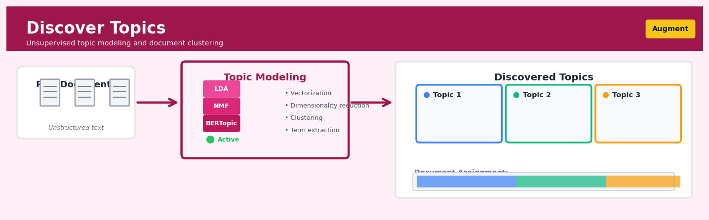

Discover Topics#


The biggest mistake I see teams make with topic modeling is treating it as a set-it-and-forget-it process when it really requires iterative refinement based on domain expertise. Your initial topic count is almost always wrong, so plan to experiment with different k values and evaluate coherence both quantitatively and through manual inspection of top terms. Remember that topic models are fundamentally exploratory tools for hypothesis generation, not ground truth label generators, so always validate discovered topics against actual business problems before building downstream pipelines.
The 60-Second Version#
What it does: Discover Topics automatically reads through thousands of documents and tells you what themes they’re talking about, without you having to define categories in advance.
When to use it: You have a large collection of text—customer feedback, support tickets, news articles, survey responses—and you need to understand what topics are being discussed and how prevalent each one is.
What you get back: A list of discovered themes (each described by its most characteristic words) plus each document’s topic mix, letting you filter, summarise, and route content by subject matter.
Difficulty |
Moderate |
Typical runtime |
Minutes on 10,000 documents |
What you bring |
A collection of text documents (emails, reviews, articles, transcripts) |
What you get |
Topic labels with representative words; topic proportions for each document |
Heuristix bucket |
Augment — AI & Language Intelligence |
Topics are statistical patterns, not human-curated categories—you must interpret and label them yourself, and they won’t always align with your business taxonomy.
Learning Objectives#
After reading this chapter, a business user will be able to:
Identify when topic modeling is the right approach for your unstructured text analysis problem, distinguishing it from classification, clustering, and keyword extraction scenarios.
Interpret topic model outputs—including topic-word distributions and document-topic mixtures—and translate these into actionable business insights for non-technical stakeholders.
Decide how many topics to extract from your corpus based on business goals, readability requirements, and the coherence of discovered themes.
After reading this chapter, a data scientist will be able to:
Implement Latent Dirichlet Allocation (LDA) and related topic models, including preprocessing text data, handling short documents, and managing computational constraints for large corpora.
Tune hyperparameters (number of topics, alpha, beta) by evaluating trade-offs between perplexity, topic coherence, and interpretability of results.
Diagnose common failure modes—such as overly generic topics, single-word dominated topics, and unstable topic assignments—and apply remediation strategies to improve model quality.
Overview#
Discover Topics is an unsupervised machine learning technique for extracting latent thematic structures from collections of unstructured text documents. It belongs to the family of probabilistic generative models—specifically topic models—that assume documents are composed of mixtures of abstract “topics,” where each topic is characterised by a probability distribution over words. The core purpose is to automatically uncover the hidden semantic themes that pervade a corpus without requiring predefined categories or labelled training data.
When to Use This#
Use this when:
Exploring large document collections: You have thousands or millions of documents (customer reviews, support tickets, survey responses) and need to understand the major themes without reading every document manually.
Building content taxonomies: You need to create or validate a categorisation scheme for documents, and want data-driven evidence of what natural groupings exist in the text.
Tracking theme evolution over time: You want to understand how topics in news articles, academic publications, or social media posts shift across time periods—enabling trend detection and early warning systems.
Segmenting customers by language patterns: You want to group customers based on what they talk about in feedback, reviews, or communications, rather than demographic or transactional attributes alone.
Preprocessing for supervised learning: You need to generate interpretable features from text that can be fed into downstream classification or regression models.
Audit and compliance review: You need to systematically identify categories of risk, complaint types, or regulatory themes across large volumes of unstructured correspondence.
Summarising meeting transcripts or call logs: You want to automatically extract the key discussion themes from lengthy conversational text.
Do NOT use this when:
You have well-defined categories and labelled data: If you already know your categories and have labelled examples, use supervised text classification instead—it will be more accurate and directly optimised for your task.
Documents are very short (fewer than ~20 words): Topic models require sufficient word co-occurrence information; tweets, search queries, or single-sentence responses often lack enough signal for reliable topic inference.
You need deterministic, reproducible assignments: Topic models are probabilistic and may produce slightly different results across runs; if exact reproducibility is critical, consider clustering or rule-based approaches.
Questions This Answers#
Understanding What Customers Are Really Saying#
What are customers actually complaining about in these 50,000 support tickets?
Which themes keep coming up in our product reviews, and are they mostly positive or negative?
What topics are dominating social media conversations about our brand this month compared to last quarter?
Are the issues mentioned in our NPS feedback different between enterprise customers and SMBs?
What’s hidden in all these open-ended survey responses that we’re not capturing with our rating scales?
Finding Strategic Patterns and Opportunities#
Which topics in our sales call transcripts correlate with deals we actually close versus ones we lose?
What are the emerging themes in our market research interviews that we should be building products around?
Is there a pattern in the language our top-performing support agents use compared to average performers?
What themes appear in employee exit interview comments, and have they shifted over the past year?
Which discussion topics in our online community drive the most engagement and return visits?
Making Decisions About Content and Communication#
Should we reorganize our knowledge base — are the current categories aligned with what customers are actually asking about?
Which topics should our content team prioritize for the next quarter based on what prospects are researching?
Are we messaging the right product benefits, or is there a disconnect between our marketing copy and what customers care about in reviews?
How should we segment our email campaigns — what are the distinct interest groups we can identify from user behavior and feedback?
How It Works#
Imagine you’re a detective who’s just seized 10,000 emails from a corporate server, but you have no idea what the company does. You can’t read them all, so you start noticing patterns: some emails keep using words like “invoice,” “payment,” and “quarter” together; others cluster around “server,” “backup,” and “deployment”; still others mention “candidate,” “interview,” and “hiring.” You’ve never seen the org chart or job descriptions, but just by observing which words travel together, you can reverse-engineer that this company has Finance, IT, and HR departments. Topic discovery works the same way—it finds hidden themes by detecting which words consistently hang out together across thousands of documents, then labels each document as a blend of those themes.
DOCUMENT COLLECTION DISCOVERED TOPICS
┌─────────────────────┐ ┌──────────────────┐
│ Doc 1: "The server │ │ Topic A (Tech): │
│ crashed during the │ │ server... 15% │
│ deployment..." │ │ crash.... 12% │
├─────────────────────┤ │ code..... 10% │
│ Doc 2: "Please send │ ─→ ├──────────────────┤
│ the invoice for Q3 │ │ Topic B (Finance)│
│ payment..." │ │ invoice.. 18% │
├─────────────────────┤ │ payment.. 14% │
│ Doc 3: "Interview │ │ quarter.. 11% │
│ candidate tomorrow │ ├──────────────────┤
│ for analyst role" │ │ Topic C (HR): │
├─────────────────────┤ │ candidate 16% │
│ Doc 4: "Deploy code │ │ interview 13% │
│ after testing and │ │ hiring... 09% │
│ fix server bugs" │ └──────────────────┘
└─────────────────────┘ ↓
DOCUMENT COMPOSITIONS
┌────────────────────┐
│ Doc 1: 85% Topic A │
│ 15% Topic B │
│ Doc 2: 95% Topic B │
│ Doc 4: 70% Topic A │
│ 30% Topic C │
└────────────────────┘
1. Start with a guess. The algorithm begins by randomly assigning every word in every document to one of a pre-specified number of topics (you tell it “find 10 topics” or “find 50 topics”). At this point, the assignments are nonsense—pure randomness.
2. Count co-occurrences. For each word, the algorithm asks two questions: “Which topics does this word appear in across all documents?” and “Which topics are prevalent in the current document?” It’s hunting for patterns of togetherness.
3. Reassign based on probability. The algorithm moves each word to the topic where it fits best, judged by how often that word appears in that topic elsewhere and how dominant that topic is in the current document. Words vote with their company.
4. Iterate thousands of times. Steps 2 and 3 repeat in cycles. Gradually, coherent topics emerge: words that truly belong together (like “budget,” “forecast,” “revenue”) migrate into the same topic, while interlopers get reassigned elsewhere.
5. Stabilize and label. After enough iterations, the topics stop changing. Each topic is now a ranked list of words (like a tag cloud), and each document is a recipe: “60% Topic 3, 30% Topic 7, 10% Topic 1.” You then read the top words in each topic and give it a human name like “Financial Planning” or “Customer Complaints.”
The key insight: Documents reveal their hidden structure through the company words keep—themes emerge not from metadata or labels, but from the statistical reality that words about the same subject naturally travel together.
The Intuition#
Imagine you have inherited a vast library of unlabelled books—thousands of volumes with no catalogue, no subject tags, no organisation whatsoever. How would you understand what this collection contains? One approach would be to read every book, but that is impractical. A smarter approach would be to notice patterns in word usage: books that frequently mention “plaintiff,” “defendant,” and “verdict” probably share a legal theme; those with “neuron,” “synapse,” and “cortex” likely concern neuroscience.
This is precisely what topic modelling does, but at scale and with mathematical rigour. The key insight is that words do not appear randomly in documents—they cluster together based on the underlying subjects being discussed. A single document typically touches on multiple topics: a newspaper article about healthcare policy might blend political vocabulary with medical terminology. Topic modelling disentangles these overlapping themes by identifying which words tend to co-occur and grouping them into coherent “topics.”
The generative story provides a useful mental model. Imagine an author writing a document according to the following process: first, they decide (perhaps unconsciously) the proportion of the document devoted to each topic—say, 60% economics, 30% technology, 10% politics. Then, for each word they write, they first randomly pick a topic according to these proportions, and then randomly pick a word that is typical of that topic. The topic model reverses this process: given the finished documents, it infers both the topic mixtures for each document and the word distributions for each topic. This is an inverse problem, solved through statistical inference.
What makes this powerful is that topics emerge organically from the data. You do not tell the algorithm what “economics” or “technology” means—you only specify how many topics to look for. The algorithm discovers that certain words cluster together, and you subsequently interpret these clusters by examining their characteristic vocabulary. The result is a lower-dimensional representation of your corpus: instead of describing each document by tens of thousands of possible words, you describe it by a handful of topic proportions.
The Mathematics#
Formal Problem Setup#
Let us establish notation. We have a corpus of \(D\) documents, a vocabulary of \(V\) unique terms, and we wish to discover \(K\) latent topics. Document \(d\) has length \(N_d\) words, and we denote the \(n\)-th word in document \(d\) as \(w_{d,n} \in \{1, 2, \ldots, V\}\).
A topic is a probability distribution over the vocabulary. We represent topic \(k\) as a vector \(\boldsymbol{\phi}_k \in \mathbb{R}^V\) where \(\phi_{k,v} = P(\text{word} = v \mid \text{topic} = k)\) and \(\sum_{v=1}^{V} \phi_{k,v} = 1\).
A document-topic distribution for document \(d\) is a vector \(\boldsymbol{\theta}_d \in \mathbb{R}^K\) where \(\theta_{d,k} = P(\text{topic} = k \mid \text{document} = d)\) and \(\sum_{k=1}^{K} \theta_{d,k} = 1\).
The Generative Model: Latent Dirichlet Allocation#
The most widely used topic model is Latent Dirichlet Allocation (LDA), introduced by Blei, Ng, and Jordan (2003). LDA posits the following generative process for each document:
Draw the document’s topic proportions from a Dirichlet prior:
For each word position \(n = 1, \ldots, N_d\):
a. Draw a topic assignment:
b. Draw the observed word from that topic’s distribution:
The topic-word distributions \(\boldsymbol{\phi}_k\) are also drawn from a Dirichlet prior:
The Dirichlet Distribution#
The Dirichlet distribution is a distribution over probability vectors—it is the conjugate prior for the categorical distribution. For a \(K\)-dimensional Dirichlet with concentration parameter \(\boldsymbol{\alpha} = (\alpha_1, \ldots, \alpha_K)\):
When \(\alpha_k < 1\) for all \(k\), the distribution favours sparse vectors (most mass on a few components). When \(\alpha_k > 1\), it favours more uniform distributions. This is crucial: setting \(\alpha_k < 1\) encourages documents to focus on a few topics, which matches our intuition about real documents.
Joint Probability and Likelihood#
The joint probability of observed words, topic assignments, and parameters is:
where \(\mathbf{W}\) denotes all observed words, \(\mathbf{Z}\) denotes all topic assignments, \(\boldsymbol{\Theta}\) denotes all document-topic distributions, and \(\boldsymbol{\Phi}\) denotes all topic-word distributions.
The Inference Problem#
Our goal is to compute the posterior distribution over the latent variables given the observed words:
The denominator—the marginal likelihood—requires summing over all possible topic assignments:
This is intractable because the sum has \(K^{\sum_d N_d}\) terms. We must resort to approximate inference.
Collapsed Gibbs Sampling#
A common approach is collapsed Gibbs sampling, which integrates out \(\boldsymbol{\Theta}\) and \(\boldsymbol{\Phi}\) analytically (exploiting Dirichlet-categorical conjugacy) and samples only the topic assignments \(\mathbf{Z}\).
The collapsed conditional distribution for a single topic assignment, given all other assignments \(\mathbf{Z}_{-(d,n)}\), is:
where:
\(n_{d,k}^{-(d,n)}\) is the count of words in document \(d\) assigned to topic \(k\), excluding position \(n\)
\(n_{k,v}^{-(d,n)}\) is the count of word \(v\) assigned to topic \(k\) across all documents, excluding position \((d,n)\)
The algorithm iterates through all word positions, resampling topic assignments according to this distribution, until convergence.
Variational Inference#
An alternative is variational inference, which approximates the posterior with a simpler distribution \(q(\mathbf{Z}, \boldsymbol{\Theta}, \boldsymbol{\Phi})\) that factorises:
We optimise the evidence lower bound (ELBO):
Coordinate ascent updates for the variational parameters can be derived in closed form. Online variants process documents in mini-batches, enabling scaling to massive corpora.
Model Assumptions#
Bag-of-words assumption: Word order within documents is ignored; only word frequencies matter.
Exchangeability of documents: Documents are assumed to be exchangeable (no ordering).
Fixed number of topics: \(K\) must be specified in advance (though extensions exist).
Topic independence: The Dirichlet prior assumes topics are generated independently.
Relationship to Other Methods#
Probabilistic Latent Semantic Analysis (pLSA): LDA’s predecessor; lacks proper priors, leading to overfitting.
Non-negative Matrix Factorisation (NMF): Factorises the document-term matrix \(\mathbf{X} \approx \mathbf{W}\mathbf{H}\) where both factors are non-negative. Often produces similar results to LDA but with different theoretical foundations.
Latent Semantic Analysis (LSA): Uses truncated SVD on the document-term matrix; topics can have negative weights, making interpretation harder.
Edge Cases and Degeneracies#
Very short documents: Insufficient word counts lead to high posterior uncertainty in \(\boldsymbol{\theta}_d\).
Rare words: Words appearing in very few documents provide little co-occurrence signal and may be assigned arbitrarily.
Topic collapse: With poor initialisation or inappropriate \(K\), multiple topics may become nearly identical.
Understanding the Mathematics#
The Document-Topic Distribution#
The equation:
Read it aloud:
“The topic mixture for document d is drawn from a Dirichlet distribution with parameter alpha.”
What each symbol means:
θ_d — the proportions of topics in document d (e.g., 40% politics, 35% economy, 25% sports)
~ — “is drawn from” or “follows the probability distribution”
Dirichlet(α) — a probability distribution that generates valid proportions (numbers between 0 and 1 that sum to 1)
α — a parameter controlling how concentrated or spread out the topic mix is
A concrete numerical example:
Suppose we’re analyzing customer reviews and we have 3 topics: Price, Quality, Service. If α = 0.5 (favoring sparse mixtures), one review might get θ = [0.70, 0.25, 0.05]—mostly about Price. Another review with the same α might get [0.05, 0.10, 0.85]—mostly Service. If α = 10 (favoring even mixtures), a review might get [0.34, 0.33, 0.33]—discussing all three roughly equally.
Why this equation matters:
This equation lets documents be about multiple things at once—a real customer review can discuss both quality and price—rather than forcing each document into exactly one category.
The Topic-Word Distribution#
The equation:
Read it aloud:
“The word distribution for topic k is drawn from a Dirichlet distribution with parameter beta.”
What each symbol means:
φ_k — the probabilities of each word appearing in topic k
~ — “is drawn from”
Dirichlet(β) — same type of distribution, ensuring valid word probabilities
β — parameter controlling whether topics use many words or just a few characteristic ones
A concrete numerical example:
For a “Technology” topic with vocabulary size 10,000 and β = 0.01 (sparse), we might see: P(“software”) = 0.045, P(“algorithm”) = 0.038, P(“data”) = 0.031, while most other words get probabilities near 0.0001. For a β = 5 (smoother), those same words might be: P(“software”) = 0.008, P(“algorithm”) = 0.007, P(“data”) = 0.006—more evenly spread across vocabulary.
Why this equation matters:
This defines what makes a topic recognizable—which words are strongly associated with it—allowing the model to discover that “cloud,” “server,” and “database” cluster together naturally.
Generating Words in a Document#
The equation:
Read it aloud:
“The topic assignment for the n-th word in document d is randomly chosen according to that document’s topic proportions. Then, the actual word is randomly chosen according to the word probabilities of that assigned topic.”
What each symbol means:
z_{d,n} — which topic generated the n-th word in document d (e.g., topic 2)
w_{d,n} — the actual n-th word observed (e.g., “price”)
Categorical(θ_d) — picking one topic based on the document’s topic mix
Categorical(φ_z) — picking one word based on that topic’s word distribution
A concrete numerical example:
Document 15 is a product review with θ₁₅ = [0.60, 0.30, 0.10] across three topics. For the 8th word position: we sample topic 1 with 60% chance. Topic 1 has φ₁ where P(“affordable”) = 0.052. So w₁₅,₈ = “affordable” gets generated. For the 9th word: we might sample topic 2 (30% chance), which has P(“durable”) = 0.041, generating w₁₅,₉ = “durable.”
Why this equation matters:
This generative story explains how real documents could have been created, which the algorithm inverts to infer the hidden topics from observed words.
The Big Picture#
The mathematics builds a probabilistic machine that can reverse-engineer the themes in a document collection. It assumes documents were written by authors mentally juggling several topics, sprinkling words from each topic into the text according to invisible proportions. The Dirichlet distributions are chosen because they naturally produce proportions and allow sparse solutions—most documents focus on just a few topics, and most topics use just a handful of characteristic words. What seems like abstract probability theory is really just a formal way of saying: people write about mixtures of themes, and we can detect those themes by noticing which words travel together across documents.
Python Implementation#
import numpy as np
import pandas as pd
from sklearn.datasets import fetch_20newsgroups
from sklearn.feature_extraction.text import CountVectorizer
from sklearn.decomposition import LatentDirichletAllocation
import warnings
warnings.filterwarnings('ignore')
# =============================================================================
# Example 1: Basic LDA with scikit-learn
# =============================================================================
# Load a standard text dataset (subset of 20 newsgroups)
categories = ['rec.sport.baseball', 'sci.med', 'comp.graphics', 'talk.politics.guns']
newsgroups = fetch_20newsgroups(
subset='train',
categories=categories,
remove=('headers', 'footers', 'quotes') # Remove metadata for cleaner topics
)
print(f"Loaded {len(newsgroups.data)} documents from {len(categories)} categories\n")
# Create document-term matrix using bag-of-words representation
vectorizer = CountVectorizer(
max_df=0.95, # Ignore terms appearing in >95% of documents
min_df=5, # Ignore terms appearing in <5 documents
stop_words='english', # Remove common English stopwords
max_features=5000 # Limit vocabulary size for efficiency
)
doc_term_matrix = vectorizer.fit_transform(newsgroups.data)
feature_names = vectorizer.get_feature_names_out()
print(f"Document-term matrix shape: {doc_term_matrix.shape}")
print(f"Vocabulary size: {len(feature_names)}\n")
# Fit LDA model
n_topics = 4 # We expect 4 topics to align with our 4 categories
lda_model = LatentDirichletAllocation(
n_components=n_topics,
doc_topic_prior=0.1, # Alpha: prior for document-topic distribution (sparse)
topic_word_prior=0.01, # Beta: prior for topic-word distribution (sparse)
learning_method='online', # Use online variational inference
learning_offset=50.0, # Downweights early iterations in online learning
max_iter=50, # Number of passes over the data
random_state=42, # For reproducibility
n_jobs=-1 # Use all CPU cores
)
# Fit the model and transform documents to topic space
doc_topic_distributions = lda_model.fit_transform(doc_term_matrix)
print("Model fitted successfully.\n")
# =============================================================================
# Display the discovered topics
# =============================================================================
def display_topics(model, feature_names, n_top_words=
## Visualisations


## Using This in Heuristix
### What You'll Need
The **Discover Topics** node expects a dataset with text content—typically customer feedback, support tickets, survey responses, or any collection of documents you want to understand thematically.
**Required input:**
- One text column containing your documents (each row = one document)
**Optional but helpful:**
- A document ID or timestamp for tracking
**Example input:**
| document_id | feedback_text |
|-------------|---------------|
| 1 | "The checkout process was confusing and slow" |
| 2 | "Love the new mobile app design, very intuitive" |
| 3 | "Delivery took forever, but product quality is great" |
### Configuration Parameters
| Parameter | What It Does | Sensible Default | When to Adjust |
|-----------|-------------|------------------|----------------|
| **Number of Topics** | How many themes to extract from your corpus | 5–10 | Increase for larger, more diverse datasets (10,000+ documents). Decrease if topics feel too granular or overlapping. |
| **Minimum Document Frequency** | Ignores words appearing in fewer than X documents | 2 | Raise this (5–10) for noisy data with typos. Lower it (1) if you have a small corpus and need to retain rare terms. |
| **Maximum Document Frequency** | Ignores words appearing in more than X% of documents | 80% | Lower (50–60%) if common words dominate your topics. Keep high if your corpus is specialized. |
| **Words Per Topic** | How many top words to display for each topic | 10 | Increase to 15–20 when exploring unfamiliar domains to get more context. |
| **Algorithm** | LDA (Latent Dirichlet Allocation) or NMF (Non-negative Matrix Factorization) | LDA | Try NMF if you need sharper, more distinct topics—it tends to produce cleaner separations. |
### What You'll Get Back
**New columns added to your dataset:**
- **dominant_topic**: The primary topic assigned to each document (0, 1, 2, etc.)
- **topic_probability**: Confidence score for the dominant topic (0–1)
- **topic_distribution**: Full probability distribution across all topics
**Outputs panel displays:**
- **Topic definitions**: Each topic shown as its top words with weights (e.g., "Topic 0: delivery 0.08, shipping 0.06, late 0.05...")
- **Topic prevalence chart**: Bar chart showing how many documents belong to each topic
- **Document-topic heatmap**: Visual representation of how strongly each topic appears across your corpus
- **Sample documents per topic**: A few example texts that best represent each theme
### Connecting Downstream
**Common next steps:**
- **Filter or Group** → Isolate documents by topic to deep-dive into specific themes
- **Sentiment Analysis** → Combine topics with sentiment to understand "which themes are problematic vs. positive"
- **Time Series Chart** → Track how topic prevalence changes over time (requires date field)
- **Export** → Send topic-labeled data to your CRM or ticketing system for routing
### Quick Start: Analyzing Customer Feedback
1. **Connect your data source** containing customer comments or reviews
2. **Select your text column** in the "Text Field" dropdown
3. **Start with 8 topics** and default settings—click Run
4. **Review the topic words**—do they make intuitive sense? Rename them mentally (e.g., "Topic 2 = Shipping Issues")
5. **Adjust the number of topics** if they're too broad (reduce) or too narrow (increase)
6. **Connect a Filter node** to explore documents from interesting topics in detail
### Pro Tips from Experienced Users
**Clean your text first**: Connect a text preprocessing node upstream to remove URLs, excessive punctuation, or product codes—your topics will be much cleaner.
**Topics are starting points, not gospel**: The algorithm finds statistical patterns. You'll need domain knowledge to interpret and label them meaningfully. "Topic 3" might statistically exist, but you decide it represents "onboarding confusion."
**Run it multiple times**: Topic models have randomness built in. Run 2–3 times and look for stable patterns. If the same themes emerge, they're robust.
**Watch for "junk topics"**: If you see a topic dominated by stopwords or nonsense, increase your minimum document frequency to filter out noise.
**Combine with filters strategically**: Don't just accept the dominant topic—look at documents where the algorithm was uncertain (low topic_probability scores). These often reveal edge cases or multi-theme feedback worth investigating separately.
## Config Recipes
### Recipe 1: Quick Exploration
**When to use:** Initial corpus investigation when you need rapid insights into a new document collection and want to test whether topic modeling is viable for your data.
**Settings:**
| Parameter | Value | Why |
|-----------|-------|-----|
| `num_topics` | 10 | Small enough to scan all topics quickly, large enough to capture variety |
| `passes` | 1 | Single pass minimizes training time |
| `iterations` | 50 | Bare minimum for convergence patterns to emerge |
| `alpha` | `'symmetric'` | Default prior avoids premature optimization |
| `eta` | `'auto'` | Learns from corpus structure without manual tuning |
| `chunksize` | 2000 | Larger chunks mean fewer updates, faster processing |
**What you get:** Rough topic boundaries that reveal corpus structure and help you determine optimal topic counts for deeper analysis.
**Trade-off:** Lower coherence scores and less stable topic assignments across runs; topics may blend semantic boundaries.
---
### Recipe 2: Production-Grade Analysis
**When to use:** Final deployment for business intelligence dashboards, research publications, or any scenario requiring reproducible, high-quality topics.
**Settings:**
| Parameter | Value | Why |
|-----------|-------|-----|
| `num_topics` | Grid search 20-100 | Systematic optimization via coherence metrics |
| `passes` | 20 | Multiple corpus passes ensure convergence |
| `iterations` | 400 | Sufficient iterations for stable parameter estimates |
| `alpha` | 0.01 | Sparse document-topic distributions for clearer assignments |
| `eta` | 0.01 | Sparse topic-word distributions create focused topics |
| `chunksize` | 100 | Small chunks for more granular gradient updates |
| `random_state` | 42 | Ensures reproducibility across runs |
| `per_word_topics` | `True` | Enables word-level topic attribution for validation |
**What you get:** Highly coherent, stable topics with sharp semantic boundaries and reproducible assignments suitable for stakeholder presentations.
**Trade-off:** Significantly longer training time (hours vs. minutes) and requires hyperparameter tuning expertise.
---
### Recipe 3: Short-Text Collections (Tweets, Reviews, Tickets)
**When to use:** Documents average fewer than 50 words—social media posts, customer feedback forms, support tickets, or survey responses.
**Settings:**
| Parameter | Value | Why |
|-----------|-------|-----|
| `num_topics` | 15-25 | Fewer topics compensate for sparse word co-occurrence |
| `alpha` | 0.3 | Higher alpha allows documents to span multiple topics |
| `eta` | 0.1 | Prevents over-concentration given limited vocabulary overlap |
| `minimum_probability` | 0.01 | Lower threshold captures weak but meaningful associations |
| `passes` | 10 | Moderate passes balance sparsity with training time |
**What you get:** Topics that capture themes despite limited context per document, avoiding the "one topic per document" problem.
**Trade-off:** Topics may appear less distinct than with longer documents; expect more cross-topic vocabulary overlap.
---
### Recipe 4: Temporal Drift Detection
**When to use:** Monitoring how discussion themes evolve in news archives, research literature, or customer communications over months or years.
**Settings:**
| Parameter | Value | Why |
|-----------|-------|-----|
| `num_topics` | 30-50 | Higher granularity captures emerging vs. declining sub-themes |
| `alpha` | `'asymmetric'` | Reflects real-world topic frequency imbalances over time |
| `decay` | 0.7 | Weights recent documents more heavily in online learning |
| `update_every` | 1 | Enables online updates as new time-sliced batches arrive |
| `eval_every` | 10 | Frequent evaluation tracks model stability across time windows |
**What you get:** Topic models trained on sequential time windows that reveal thematic emergence, persistence, and decline patterns.
**Trade-off:** Requires careful time-slicing and batch management; topics across windows need manual alignment for comparison.
## Business Applications
**Financial Services**
A multinational investment bank receives more than 50,000 research reports, earnings transcripts, and regulatory filings daily across its trading desks. Analysts waste 60–70% of their day manually categorising and routing documents to the right teams. By applying topic modelling to this document stream, the bank automatically identifies 47 distinct themes—from "Central Bank Policy Shifts" to "Supply Chain Disruption in Semiconductors"—and routes content in real time. The result: analyst productivity increased by 43%, and the time from document arrival to actionable insight dropped from 4.2 hours to 18 minutes, enabling the bank to capture an estimated $8.3M in additional alpha over twelve months.
**Retail & E-commerce**
A fashion e-commerce platform with 3.2 million SKUs struggles with product discoverability: customers abandon searches because category tags are inconsistent and incomplete. Traditional taxonomy requires armies of content editors. The retailer applies topic discovery to product descriptions, customer reviews, and search logs, uncovering 120 natural product themes—"sustainable activewear," "vintage-inspired evening wear," "minimalist workwear"—that don't match their rigid legacy categories. Implementing these discovered topics as dynamic filters lifts conversion rate from 2.1% to 3.4% and reduces zero-result searches by 68%, driving an incremental £4.7M in quarterly revenue.
**Healthcare**
A regional health system with eleven hospitals captures thousands of unstructured clinical notes daily in its electronic health record system. Quality improvement teams want to identify emerging patient safety themes but lack the resources to read every incident report. Topic modelling automatically surfaces 23 recurring themes from 180,000 incident reports, including a previously unnoticed cluster around "post-discharge medication confusion for diabetic patients." Targeted interventions on the top five themes reduce preventable readmissions by 19% within six months, saving the system approximately $2.1M annually while measurably improving patient outcomes.
**Insurance**
A commercial property insurer processes 12,000 claims assessor reports monthly, each 3–8 pages of dense unstructured text. Claims directors suspect patterns of fraud but manual review catches only the most obvious cases. By discovering latent topics across historical claims—"water damage + recent ownership change," "fire loss + inventory expansion," "theft + minimal security measures"—the insurer builds a fraud likelihood score. This approach flags 340% more suspicious claims than rule-based systems, reduces fraudulent payouts by an estimated £6.8M annually, and accelerates legitimate claims processing from 11 days to 6 days.
**Manufacturing**
A German automotive tier-1 supplier collects maintenance logs, operator notes, and quality reports from fourteen factories worldwide, all in different formats and languages. When defect rates spike, root-cause analysis takes weeks of manual investigation. Topic discovery applied to translated maintenance records reveals that "vibration + tool wear + second shift" forms a distinct thematic cluster correlating with defects. Addressing this pattern across facilities reduces scrap rate from 3.2% to 1.7%, saving €4.3M annually and shortening time-to-resolution for quality issues from 19 days to 4 days.
**Marketing & Media**
A podcast network with 400+ shows and 50,000 episodes has no systematic way to help advertisers find thematically relevant placement opportunities. Sales teams rely on show descriptions written three years ago. Topic modelling of episode transcripts uncovers 89 distinct content themes and maps every episode accordingly. Advertisers can now target "personal finance for millennials" or "climate tech entrepreneurship" with precision, increasing ad relevance scores by 54% and lifting advertiser retention from 61% to 83%, worth an additional $2.9M in annual recurring revenue.
**Telecommunications**
A mobile carrier receives 2.3 million customer service interactions monthly—calls, emails, chats, social media—and struggles to identify why customers churn. Traditional complaint categories ("billing," "network") are too broad. Topic discovery reveals 67 granular themes, including a surprising cluster: "confusion about international roaming after plan migration." This single theme, affecting only 4% of customers, accounts for 23% of high-value customer churn. Targeted intervention reduces churn in this segment by half, retaining £11M in annual contract value.
**Public Sector**
A city council receives 40,000 citizen complaints, consultation responses, and service requests yearly. Policy teams manually sample 5% to inform priorities. Topic modelling across all submissions identifies eighteen core community concerns, revealing that "street lighting + personal safety + specific neighborhoods" forms a major unaddressed cluster spanning 4,200 submissions. This data-driven insight redirects £800K in capital budget, and constituent satisfaction with council responsiveness rises from 42% to 61% in targeted areas.
## Worked Example
Sarah Chen, a senior data scientist at Meridian Insurance, sat across from the head of customer experience as he scrolled through a spreadsheet of survey responses. "We're getting thousands of these every month," he said, rubbing his temple. "Our team reads a sample, tags them by hand, but I know we're missing patterns. Can you help us understand what customers are actually talking about?"
The stakes were clear: Meridian had just rolled out a new claims portal, and leadership needed to know whether to double down on the technology investment or pivot. Manual review had flagged "frustration with mobile," but Sarah suspected there was more signal buried in the noise.
**The Data**
Sarah pulled six months of free-text survey responses—3,847 comments in total. She exported them to a CSV with basic metadata:
| response_id | date | channel | rating | comment_text |
|-------------|------------|---------|--------|-------------------------------------------------------------|
| 10234 | 2024-01-15 | mobile | 2 | "App crashes when I try to upload photos of the damage" |
| 10235 | 2024-01-16 | web | 4 | "Claim was approved quickly but communication was unclear" |
| 10236 | 2024-01-17 | phone | 5 | "Agent walked me through everything, very patient" |
| 10237 | 2024-01-18 | mobile | 1 | "Can't log in half the time, just spins and times out" |
| 10238 | 2024-01-19 | web | 3 | "Not sure what documents you still need from me" |
The data was messy in typical ways—inconsistent capitalization, some responses in all caps, a few in Spanish. Sarah cleaned obvious junk but left the organic language intact. Topic models work better with real human variation than with over-scrubbed text.
**The Setup**
Sarah loaded the data into her workflow and dropped in the Discover Topics node. She set the number of topics to 5—small enough to be interpretable, large enough to catch nuance. "I'll start conservative," she thought. "I can always re-run with more topics if these feel too broad."
She kept the default preprocessing (lowercase, remove stopwords, stem words) and set the random seed for reproducibility. She wanted her manager to be able to replicate this if questions came up later.
```python
import pandas as pd
from sklearn.feature_extraction.text import CountVectorizer
from sklearn.decomposition import LatentDirichletAllocation
# Load survey data
df = pd.read_csv('survey_responses.csv')
# Prepare text: simple preprocessing
texts = df['comment_text'].fillna('').str.lower()
# Vectorize with reasonable constraints
vectorizer = CountVectorizer(
max_features=500,
min_df=5, # word must appear in at least 5 docs
max_df=0.7, # ignore words in >70% of docs
stop_words='english'
)
doc_term_matrix = vectorizer.fit_transform(texts)
# Fit LDA model
lda = LatentDirichletAllocation(
n_components=5,
random_state=42,
max_iter=20
)
lda.fit(doc_term_matrix)
# Extract top words per topic
feature_names = vectorizer.get_feature_names_out()
for topic_idx, topic in enumerate(lda.components_):
top_words_idx = topic.argsort()[-8:][::-1]
top_words = [feature_names[i] for i in top_words_idx]
print(f"Topic {topic_idx}: {', '.join(top_words)}")
The Results
Within minutes, Sarah had five topics, each represented by its top words:
Topic |
Top Words |
Interpretation |
|---|---|---|
0 |
app, crash, upload, photo, freeze, load, mobile |
Mobile App Stability |
1 |
claim, approved, fast, process, quick, easy |
Positive Claims Process |
2 |
agent, call, helpful, phone, patient, explain |
Agent Interaction |
3 |
email, update, status, document, notified, waiting |
Communication Gaps |
4 |
login, password, reset, account, access, error |
Authentication Issues |
Sarah smiled. Topic 0 and Topic 4 were distinct—not just “mobile frustration,” but two separate problems: crashes during photo uploads and authentication failures. Topic 3 revealed a communication void that hadn’t surfaced in the manual tagging.
The Insight
The breakthrough came when Sarah joined the topic distributions back to the original data and filtered by rating. Low-rated responses (1–2 stars) overwhelmingly loaded on Topics 0 and 4, but Topic 3—communication—appeared across all ratings, even in 4-star reviews. Customers liked the speed but felt left in the dark.
The Decision
Sarah presented to the product and customer experience teams the following week. The mobile team immediately prioritized authentication and photo upload stability. But the bigger decision was strategic: Meridian launched automated SMS updates for every claim status change, directly addressing the communication gap that cut across the entire experience.
Three months later, survey ratings had improved by 0.4 stars on average, and mentions of “waiting” and “status” dropped by 60%.
What Sarah Would Do Differently
Looking back, Sarah wished she’d experimented with 7 or 8 topics—Topic 2 felt broad, likely mixing phone agents with chatbot interactions. She also would’ve run coherence metrics to validate topic quality rather than relying purely on interpretability. But for a first pass, the method had delivered exactly what the business needed: clarity from chaos.
Interpreting Your Results#
You’ve just run Discover Topics and you’re staring at a dashboard filled with probability distributions, word lists, and coherence scores. Let’s translate what you’re seeing into actionable insight.
Topic-Word Distributions (The “What are my topics?” table)#
Plain-English meaning: Each topic shows you its top 10–20 words with probability scores. A word with 0.08 probability means “8% of this topic’s identity comes from this word.” You’re looking for topics where the top words paint a clear, coherent picture. Topic 3 showing customer, service, support, call, issue is interpretable. Topic 7 showing company, business, work, people, time is a junk drawer.
Concrete benchmarks:
Top word probability >0.05: Strong signal. The topic has a clear focus.
Top word 0.02–0.05: Moderate signal. Topic may be diffuse but still useful.
Top word <0.02: Red flag. Topic is likely incoherent noise or overfitted.
Red flags: If your top 5 words in multiple topics are generic (company, business, work, people, good), you’ve extracted meaningless themes. If two topics share 60%+ of their top-10 words, they’re redundant—you asked for too many topics. If proper nouns dominate (names, brands, locations), your preprocessing failed to normalise them.
Topic Coherence Score#
Plain-English meaning: This metric (typically C_v or U_Mass) measures whether the top words in each topic actually appear together in real documents. High coherence = humans will agree this topic “makes sense.” It’s your primary quality metric.
Concrete benchmarks:
Below 0.40: Topics are largely incoherent. Model failed or data is too messy.
0.40–0.55: Acceptable for exploratory analysis. Some topics will be interpretable.
0.55–0.70: Good. Most topics represent genuine themes.
Above 0.70: Excellent. Topics are highly coherent and trustworthy.
Red flags: Coherence >0.85 often means you’ve asked for too few topics—the model found only the most obvious themes. Coherence dropping sharply when you increase topic count from k to k+5 suggests you’ve hit the natural limit of meaningful themes in your corpus.
Document-Topic Distributions (The “Which documents belong to which topic?” matrix)#
Plain-English meaning: For each document, you see a probability distribution across topics. Document 42 showing [0.71, 0.05, 0.02, 0.18, 0.04] means it’s 71% Topic 1, 18% Topic 4, with negligible presence of others.
Concrete benchmarks:
Dominant topic >0.60: Document has a clear primary theme. Safe to categorise.
Dominant topic 0.35–0.60: Mixed-theme document. Check top 2–3 topics.
Dominant topic <0.35: Document is genuinely multi-thematic or incoherent.
Red flags: If 40%+ of documents show uniform distributions (all topics ~0.10–0.15), your topic count is wrong or your documents are too short/noisy. If most documents show 0.95+ in a single topic, you’ve underfit—ask for more topics.
Perplexity (Lower is better)#
Plain-English meaning: Measures how “surprised” the model is by held-out documents. It’s a likelihood-based metric that improves with model complexity but doesn’t guarantee human-interpretable topics.
Concrete benchmarks: Perplexity values are corpus-dependent, so absolute numbers are less useful than trends. Watch for the elbow: when perplexity stops improving meaningfully as you add topics, you’ve likely found the right range.
Red flags: Don’t chase perfect perplexity. A model with perplexity 847 and coherence 0.62 beats one with perplexity 592 and coherence 0.38 every time. Perplexity is a sanity check, not your north star.
Reading Outputs Together#
A healthy topic model shows: coherence 0.55+, top-word probabilities >0.04, 60%+ of documents with a dominant topic >0.50, and perplexity declining but stabilising. If coherence is high but documents all assign to 2–3 topics, you underfit. If perplexity is great but topics share identical top words, you’ve created duplicates.
Sanity Check Checklist#
Can you name each topic in 2–4 words based on its top terms alone?
Are fewer than 20% of your topics “junk drawer” topics with generic words?
Is coherence above 0.40 for the majority of topics?
Do fewer than 10% of documents show completely uniform topic distributions?
Can you find 3–5 real documents per topic that genuinely exemplify that theme?
Good Enough to Act On?#
If your coherence is ≥0.50, you can name 80%+ of topics meaningfully, and dominant-topic assignments feel right when you spot-check 20 random documents, you’re ready to act. Use the topics to segment your corpus, label incoming documents, or feed downstream analyses. Don’t wait for perfection—topic models are lenses, not truth. If the themes help you see patterns you couldn’t before, they’re working.
Decision Guidance#
What This Result Is Telling You#
Topic modeling reveals the underlying conversation threads that run through your document collection—customer feedback, support tickets, research papers, or social media posts. When you see a topic emerge, you’re looking at a cluster of documents that share a common semantic theme, expressed through their characteristic vocabulary. This is not a categorization imposed from outside; it’s the organic structure of what people are actually talking about, weighted by how frequently and consistently those themes appear across your corpus.
The distribution of topics tells you where attention, concern, or interest is concentrated. A topic that accounts for 30% of your customer service transcripts represents a major recurring issue or question. Topics that appear in only 2% of documents may be niche concerns—or early warning signals. The words that define each topic show you the language your stakeholders actually use, not the terms you expected or the categories you designed. This is critical for understanding gaps between what you think is happening and what your documents reveal is actually happening.
When you track topics over time or across segments, you’re seeing strategic shifts. A pricing topic that grows from 8% to 18% of support volume over three months signals a problem before it becomes a crisis. A technical feature that dominates product reviews in one region but barely appears in another reveals localization gaps or market-specific needs that conventional category analysis would miss.
Decision Points#
If you see this… |
It means… |
Recommended action |
Who acts on this |
|---|---|---|---|
A single topic accounts for >40% of documents |
One issue or theme is dominating the conversation, crowding out other signals |
Escalate to leadership for immediate resource allocation; investigate whether this represents crisis, opportunity, or data collection bias |
Head of Department, VP of Operations |
3–5 topics each represent 10–25% of corpus with distinct vocabularies |
Healthy thematic diversity; corpus contains multiple substantive themes |
Proceed with segmentation strategy; assign ownership of each topic to relevant business units |
Product Managers, Department Leads |
15+ topics identified, many <5% of documents each |
Model is over-segmenting; themes are too granular to be strategically useful |
Re-run analysis with fewer topics (reduce by 30–40%); or accept granularity if deep operational detail is the goal |
Data Science Lead, Project Owner |
Topic distribution shifts >10 percentage points month-over-month |
Significant change in customer concerns, market dynamics, or operational issues |
Convene cross-functional review within one week; compare against known events or campaigns; prepare targeted response |
Chief Customer Officer, Head of Strategy |
Key business priority appears in <3% of documents |
Either the priority isn’t resonating with stakeholders, or your document source doesn’t capture relevant conversation |
Audit data sources for coverage gaps; reassess communication strategy for that priority; consider primary research |
Marketing Director, Communications Lead |
When to Proceed vs. Investigate Further#
Proceed with confidence when:
Topic coherence scores exceed 0.50 and human reviewers can name each topic without seeing the label
At least 80% of documents have a primary topic assignment with probability >0.30
Topic distributions remain stable (±5%) across random 70/30 splits of your corpus
Proceed with caution when:
Topic coherence is between 0.35–0.50, requiring domain expertise to interpret themes
60–80% of documents have clear primary topic; remaining documents may span multiple themes
You have fewer than 500 documents or fewer than 50 documents per expected topic
Investigate before acting when:
Multiple topics share >50% vocabulary overlap—they may represent the same underlying theme
A “junk drawer” topic emerges containing administrative noise (signatures, disclaimers, form fields)
Topic membership correlates suspiciously with document metadata (all Topic 3 documents are from one date or source)
Do not use these results yet if:
Coherence scores fall below 0.35 or expert reviewers cannot discern meaningful themes
Fewer than 40% of documents have primary topic probability >0.30
You have fewer than 200 documents total—patterns are likely statistical noise
The Cost of Getting This Wrong#
A retail company misinterpreted a rapidly growing topic in customer reviews as excitement about a new product line, when it actually represented mounting frustration with shipping delays—the word “waiting” appeared alongside product names. They doubled down on inventory procurement, exacerbating warehouse bottlenecks, while customer satisfaction scores plummeted. Three months and significant revenue loss later, they realized their mistake. Conversely, a healthcare organization dismissed a small topic (<4% of patient feedback) as insignificant noise, missing an emerging safety concern that eventually triggered a regulatory audit. The cost: legal fees, remediation, and damaged reputation. These failures share a common root: acting on topic labels without validating what the underlying documents actually say, or ignoring topics without understanding why they’re small. Topic modeling shows you where to look—it doesn’t tell you what you’re looking at. Skipping the validation step turns a powerful discovery tool into expensive corporate fortune-telling.
Common Pitfalls#
The Illusion of Perfect Coherence
Here’s what happened: A marketing analyst at a retail company ran topic modeling on customer reviews and set the number of topics to 20 because “it felt right for our product range.” The coherence score came back at 0.72, which seemed excellent based on a blog post they’d read. They presented the topics to stakeholders, who nodded along—each topic looked internally consistent. Six months later, they discovered that topics 4, 7, and 11 were all variations of “shipping complaints” and topics 8, 13, and 16 all covered “sizing issues.” They’d created redundant topics that diluted their insights and led to duplicated effort in operations.
Why it happens: Coherence scores measure how often top words in a topic co-occur, not whether topics are distinct from each other. High coherence can mask redundancy.
How to detect it: Calculate topic similarity using Jensen-Shannon divergence between topic distributions. If pairs score above 0.85 similarity, you likely have redundancy. Also check: do multiple topics share 4+ words in their top-10 terms?
The fix: Reduce the topic count and re-run, or use hierarchical topic modeling to capture the relationship between similar themes explicitly.
The Stopword Massacre
Here’s what happened: A junior data scientist at a healthcare firm was analyzing patient feedback. Following preprocessing best practices from their bootcamp, they removed all standard English stopwords plus domain-specific terms like “doctor,” “hospital,” and “patient” because they appeared in 90% of documents. The resulting topics were gibberish—one topic’s top words were “really,” “actually,” “basically,” and “literally.” Another was “Tuesday,” “Wednesday,” “appointment,” “scheduled.” They couldn’t explain any topic to their clinical team.
Why it happens: Aggressive stopword removal eliminates the connective tissue that makes topics interpretable. What’s common across a corpus may still differentiate topics within it.
How it detect it: Look at your top-10 terms per topic. If they lack nouns or verbs, or if topics seem to cluster around metadata (days, times) rather than content, you’ve over-filtered. Also check document-term matrix density—if it’s below 0.5%, you may have removed too much.
The fix: Start with minimal stopwords (just articles and pronouns), then iteratively remove only terms that appear in 95%+ of documents AND don’t improve interpretability.
The Vanishing Documents Problem
Here’s what happened: An experienced data scientist at a news organization was modeling article topics. They set a minimum document frequency threshold of 50 documents and a maximum of 40% of corpus. After filtering, their 10,000-article corpus shrank to 3,200 documents represented in the model. The topics looked great—crisp, interpretable themes. But when they tried to assign topics to new articles, 40% came back as “unclassifiable” because the new documents contained vocabulary filtered out during preprocessing.
Why it happens: Aggressive document frequency filtering optimizes for model training elegance but breaks production deployment. The filtered vocabulary doesn’t represent the full range of documents you’ll encounter.
How to detect it: Check the ratio of documents retained versus total corpus. If you’ve lost more than 15% of documents, red flag. Also run a test: can the model meaningfully assign topics to a held-out validation set? If assignment confidence (probability of dominant topic) is below 0.3 for many documents, your vocabulary is too narrow.
The fix: Relax document frequency thresholds, or maintain two vocabularies—one strict for training, one inclusive for inference with a fallback mechanism.
The Single-Run Trap
Here’s what happened: A business analyst ran LDA on company emails, got interpretable-looking topics on the first try, and immediately built a dashboard. Three weeks later, a colleague re-ran the same code on the same data and got completely different topics—“Sales Outreach” and “Customer Support” had swapped their word distributions. Leadership lost trust in the entire analysis.
Why it happens: Topic models use random initialization. Without setting seeds or running multiple initializations, results are unstable and non-reproducible.
How to detect it: Run your model 3-5 times with different random seeds. Calculate the Jaccard similarity of top-10 terms across runs. If similarity is below 0.6 for supposedly “the same” topic, you have instability.
The fix: Always set random seeds for reproducibility, and run multiple initializations (most libraries support this), selecting the model with the best likelihood or coherence score.
The Label Projection Fallacy
Here’s what happened: A product manager was analyzing support tickets. Topic 3’s top words were “refund,” “charge,” “payment,” “incorrect,” “billing.” They labeled it “Billing Errors” and filtered all tickets in this topic for the finance team. Finance came back confused—half the tickets were actually about promotional codes not applying, which is a marketing issue, not billing.
Why it happens: Humans pattern-match on salient words and create overly narrow interpretations. Topics are probabilistic mixtures, not crisp categories.
How to detect it: Sample and manually read 20-30 documents with high probability for each topic. If more than 20% don’t match your label, it’s too narrow or wrong.
The fix: Label topics by reading representative documents, not just top words. Use labels like “Billing & Payment Issues” that acknowledge breadth, and maintain sub-categories if needed.
Common Misconceptions#
“Topic models tell us what documents are about”
Why people believe this: When you see topics with words like “market, price, stock, trade,” it’s natural to think the model has identified “finance documents.” The output looks interpretive, and we’re pattern-matching creatures who immediately construct narratives from word clusters.
The truth: Topic models perform statistical co-occurrence detection, not semantic understanding. They identify which words tend to appear together across documents, then represent each document as a mixture of these co-occurrence patterns. A document might score high on your “finance topic” not because it’s about finance, but because it contains words that frequently co-occur in your corpus. The model has no concept of “aboutness”—it’s decomposing a document-term matrix into lower-dimensional factors. The interpretation of what those factors mean is entirely your cognitive work, projected onto mathematical structures. This is why the same topic can manifest differently across corpora: the model learns corpus-specific co-occurrence patterns, not universal semantic categories.
The real-world consequence: A healthcare analytics team deploys topic modeling on patient complaint data, confident they’re automatically categorizing complaint types. They build dashboards showing “medication complaints” are declining. In reality, the topic mixing medication terms with procedural language is capturing a writing style used by one hospital system that recently reduced submissions. Actual medication safety issues are distributed across multiple topics. Leadership makes staffing decisions based on phantom patterns.
“More topics means more granular insights”
Why people believe this: This mirrors how hierarchical categorization works elsewhere. If five product categories aren’t specific enough, create fifty. The math allows any number of topics, and higher numbers feel more precise.
The truth: Topics are not hierarchical subdivisions—they’re basis vectors in a latent space. Increasing topic count doesn’t refine existing topics; it fundamentally restructures the entire latent space, redistributing co-occurrence patterns across a different dimensional system. With too many topics, the model fragments coherent patterns into arbitrary splits driven by corpus idiosyncrasies rather than meaningful structure. With too few, it conflates genuinely distinct patterns. There’s no universal “right” number because the optimal dimensionality depends on your corpus’s actual statistical structure and your analytical purpose. A topic model with K=50 isn’t a “more detailed version” of K=10—it’s a completely different decomposition.
The real-world consequence: A market research team receives criticism that their 20-topic model lacks detail. They rerun with 100 topics, spending weeks relabeling and building new reports. The model now fragments “customer service issues” across twelve near-identical topics differentiated only by synonyms, while genuinely important niche concerns remain hidden. Analysis becomes impossible as topics lose coherence, and the team eventually abandons the entire approach, concluding “topic modeling doesn’t work for our data.”
“Topic coherence metrics tell you if your model is good”
Why people believe this: Automated metrics promise objective model evaluation. If coherence scores improve, the model must be better capturing document structure.
The truth: Coherence metrics measure word co-occurrence predictability within topics—essentially, whether topic words appear near each other in reference corpora or sliding windows. High coherence simply means you’ve found statistically stable co-occurrence patterns. But not all meaningful patterns are coherent, and not all coherent patterns are meaningful for your task. A topic dominated by function words and common verbs can be highly coherent but analytically useless. Conversely, a topic capturing genuinely important cross-domain concepts might score poorly because those concepts bridge vocabulary clusters. Coherence is one signal about model stability, not a proxy for utility.
The real-world consequence: A data scientist optimizes hyperparameters to maximize coherence scores, selects that model, and presents results. The topics are statistically pristine but capture only the most obvious corpus regularities—stopword patterns and formatting artifacts. The subtle thematic variation stakeholders needed to understand market segmentation exists in the lower-coherence model that was automatically rejected.
“You need to clean and preprocess heavily for topic models to work”
Why people believe this: Standard NLP workflows emphasize removing stopwords, stemming, lemmatizing, and filtering rare terms. Topic modeling tutorials often begin with aggressive preprocessing, making it seem mandatory.
The truth: Topic models are surprisingly robust to “noise” because they’re learning statistical distributions, not brittle pattern matches. Words that appear uniformly across documents contribute little to topic differentiation—the model naturally downweights them through the probabilistic mechanism. Aggressive preprocessing often removes valuable signal: stopwords can indicate genre or formality, rare terms often carry specific domain meaning, and morphological variants sometimes represent genuinely distinct concepts. The corpus characteristics and analytical goals should drive preprocessing decisions, not rote adherence to tradition. Sometimes minimal preprocessing yields more interpretable topics because you’re preserving the actual linguistic structure people use.
The real-world consequence: An analyst spends three weeks building sophisticated preprocessing pipelines—custom stopword lists, domain-specific lemmatization, complex filtering rules. The resulting topics are clean but generic, missing the domain-specific terminology that was filtered as “too rare.” Meanwhile, a colleague runs a minimally preprocessed model in hours, immediately identifying critical emerging themes the over-processed model eliminated.
“Topics should be mutually exclusive to be valid”
Why people believe this: Traditional categorization systems—filing cabinets, product taxonomies, labeled datasets—typically assign items to single categories. When topics share similar words or documents load heavily on multiple topics, it feels like the model is confused or poorly specified.
The truth: The fundamental premise of topic modeling is that documents are mixtures of multiple themes, and topics themselves can share vocabulary with different emphases. A research paper might genuinely blend methodology, application domain, and theoretical framework—that’s not model confusion, that’s accurate representation of complex documents. Topic overlap in vocabulary isn’t failure; words like “system” or “analysis” legitimately participate in multiple thematic contexts. The mixture model allows proportional membership specifically because real-world documents don’t respect clean categorical boundaries. Forcing mutual exclusivity means either oversimplifying documents to their dominant theme or artificially fragmenting topics to eliminate overlap—both distort the actual structure.
The real-world consequence: A content strategist sees that news articles load on both “politics” and “economy” topics and concludes the model is broken. She forces each document to its single highest-loading topic, then builds content recommendations using these hard assignments. The recommendation system now misses readers interested in political economy coverage because those articles were arbitrarily split, and nuanced multi-topic pieces are systematically misrepresented as single-theme content.
How This Connects#
Before This Node#
Clean Text prepares raw text by removing noise, standardizing case, and handling special characters, which directly affects topic coherence—bad upstream data retains HTML tags, URLs, or encoding artifacts that become meaningless “topics” themselves, polluting your results with technical garbage instead of semantic themes.
Tokenize breaks text into individual words or n-grams that serve as the fundamental units for topic models, and if tokenization is done poorly (e.g., splitting hyphenated terms incorrectly or failing to handle contractions), the resulting word distributions will fragment meaningful concepts across multiple malformed tokens.
Remove Stopwords filters out high-frequency function words like “the,” “and,” “is” that carry little semantic weight, because including them drowns out distinctive content words and produces generic topics dominated by grammatical filler rather than substantive themes.
Lemmatize or Stem reduces words to their root forms (e.g., “running” → “run”) so that inflected variants are treated as the same concept, and skipping this step causes the model to waste representational capacity treating “analyze,” “analyzes,” “analyzing,” and “analyzed” as four separate features instead of one unified idea.
Filter by Document Frequency removes extremely rare terms (appearing in only one document) and extremely common terms (appearing in nearly all documents), because rare terms add noise without statistical power while ubiquitous terms provide no discriminative value, both degrading topic distinctiveness.
Vectorize (TF-IDF or Count) converts cleaned text into numerical document-term matrices that topic models require as input, and poor vectorization choices—like using raw counts for severely imbalanced corpora or setting vocabulary limits too low—result in models that either overweight prolific documents or miss important domain-specific terminology entirely.
After This Node#
Visualize Distributions creates bar charts, word clouds, or heatmaps of topic-word and document-topic distributions, making Discover Topics’s probabilistic output interpretable for stakeholders who need to quickly grasp what themes emerged without parsing raw probability tables.
Cluster Documents groups documents by their dominant topics or topic mixture similarity, leveraging Discover Topics’s dimensionality reduction from thousands of words down to tens of topics as clean, semantically-rich features for clustering algorithms.
Build Classifier trains supervised models using topic proportions as features, where Discover Topics’s output serves as automatically-engineered semantic variables that often outperform raw word counts for predicting categories like sentiment, urgency, or department routing.
Filter & Route applies business rules to topic assignments (e.g., “if Topic 3 > 0.4, send to legal team”), using Discover Topics’s structured output to automate document triage in workflows where manual reading is prohibitively expensive.
Track Over Time monitors how topic prevalence shifts across temporal windows (monthly support tickets, quarterly earnings calls), with Discover Topics providing consistent thematic coordinates that reveal evolving customer concerns or strategic focus areas.
Generate Recommendations suggests related documents or content by finding items with similar topic profiles, exploiting Discover Topics’s representation of semantic similarity in low-dimensional topic space rather than brittle keyword matching.
Common Pipeline Patterns#
Customer Support Intelligence Pipeline
Clean Text → Tokenize → Discover Topics → Visualize Distributions → Track Over Time
Automatically surfaces emerging product issues and shifting complaint themes from support tickets, enabling proactive responses before minor problems become systemic crises.
Research Literature Synthesis Pipeline
Remove Stopwords → Lemmatize → Discover Topics → Cluster Documents → Generate Recommendations
Organizes thousands of academic papers into thematic groups and suggests relevant reading, accelerating literature review by replacing manual tagging with automated semantic organization.
Content Personalization Pipeline
Vectorize (TF-IDF) → Discover Topics → Build Classifier → Filter & Route
Predicts user content preferences from browsing history and routes personalized article recommendations, improving engagement by matching semantic interests rather than crude keyword overlap.
What to Have Ready#
Sufficient corpus size: at least 100–200 documents with meaningful text (multiple sentences each); topic models fail on tiny corpora because they lack statistical power to separate signal from noise.
Cleaned, preprocessed text: documents already passed through standard NLP preprocessing (tokenization, stopword removal, lemmatization) and stored in a single text column; raw, dirty text produces incoherent topics.
Defined number of topics: a hypothesis or range (e.g., 5–15 topics) informed by domain knowledge or prior exploration; blindly choosing topic counts yields either oversimplified or over-fragmented results.
Evaluation strategy: plan for human review of top words per topic plus sample document assignments to validate that discovered topics align with actual semantic themes in your domain.
Try It Yourself#
Recommended Dataset#
Dataset: fetch_20newsgroups from sklearn.datasets
Source: sklearn.datasets.fetch_20newsgroups(subset='train', categories=['sci.med', 'sci.space', 'talk.politics.misc', 'rec.sport.baseball'])
This dataset is ideal for Discover Topics because it contains natural, unstructured text documents from online newsgroup discussions with inherently distinct themes. Unlike short tweets or highly structured data, these documents have sufficient word diversity and length (100–500 words each) to reveal meaningful semantic patterns. The mixed-topic nature mimics real business scenarios where customer feedback, support tickets, or research papers span multiple domains.
Business Question: “What are the dominant themes in our user-generated content, and how do different discussion forums cluster by topic?”
Size: ~2,400 documents × 1 text column (plus metadata)
Starter Code#
import numpy as np
import pandas as pd
from sklearn.datasets import fetch_20newsgroups
from sklearn.feature_extraction.text import CountVectorizer
from sklearn.decomposition import LatentDirichletAllocation
# Load subset of newsgroups data (4 distinct categories)
categories = ['sci.med', 'sci.space', 'talk.politics.misc', 'rec.sport.baseball']
newsgroups = fetch_20newsgroups(subset='train', categories=categories,
remove=('headers', 'footers', 'quotes'))
documents = newsgroups.data[:400] # Use 400 docs for speed
print(f"Loaded {len(documents)} documents\n")
# Convert text to document-term matrix (bag of words)
# Remove common English words and keep only top 1000 words
vectorizer = CountVectorizer(max_features=1000, stop_words='english',
min_df=2, max_df=0.8)
doc_term_matrix = vectorizer.fit_transform(documents)
feature_names = vectorizer.get_feature_names_out()
print(f"Vocabulary size: {len(feature_names)} words")
print(f"Matrix shape: {doc_term_matrix.shape}\n")
# Fit LDA topic model with 4 topics (matching our 4 newsgroups)
n_topics = 4
lda = LatentDirichletAllocation(n_components=n_topics, random_state=42,
max_iter=20)
doc_topic_dist = lda.fit_transform(doc_term_matrix)
print("=" * 60)
print("DISCOVERED TOPICS (Top 8 words per topic)")
print("=" * 60)
# Display top words for each discovered topic
n_top_words = 8
for topic_idx, topic in enumerate(lda.components_):
top_word_indices = topic.argsort()[-n_top_words:][::-1]
top_words = [feature_names[i] for i in top_word_indices]
print(f"Topic {topic_idx + 1}: {', '.join(top_words)}")
print("\n" + "=" * 60)
print("SAMPLE DOCUMENT TOPIC DISTRIBUTION")
print("=" * 60)
# Show topic mixture for first 3 documents
for i in range(3):
print(f"\nDocument {i + 1} preview: {documents[i][:80]}...")
topic_probs = doc_topic_dist[i]
dominant_topic = topic_probs.argmax() + 1
print(f"Topic weights: {np.round(topic_probs, 2)}")
print(f"Dominant topic: Topic {dominant_topic}")
What to Try Next#
1. Change n_topics to 6 or 8
Expect more granular themes (e.g., “space exploration” might split into “NASA missions” and “astronomy”). This teaches how topic granularity affects interpretability—too many topics create redundancy; too few miss nuance.
2. Modify max_features to 500 or 2000
With 500, topics become broader and less specific; with 2000, you capture more subtle terminology but risk noise. This demonstrates the vocabulary size vs. topic quality trade-off.
3. Remove stop_words='english' parameter
You’ll see topics polluted with “the,” “and,” “is.” This highlights why preprocessing matters—functional words obscure semantic meaning.
4. Set min_df=5 and max_df=0.5
Filters rare words (appearing in <5 docs) and very common ones (>50% of docs). Expect cleaner, more distinctive topics. This teaches how document frequency thresholds improve signal-to-noise ratio in topic discovery.
Further Reading#
Blei, D. M., Ng, A. Y., & Jordan, M. I. (2003). “Latent Dirichlet Allocation.” Journal of Machine Learning Research, 3, 993–1022. Read this if you want to understand the mathematical foundations of LDA, including the generative process, plate notation, and the original variational inference algorithm that made topic modeling tractable at scale.
Wallach, H. M., Murray, I., Salakhutdinov, R., & Mimno, D. (2009). “Evaluation methods for topic models.” Proceedings of the 26th International Conference on Machine Learning, 1105–1112. Read this if you want to understand how to properly evaluate topic models beyond perplexity, including held-out likelihood, word intrusion tasks, and topic coherence metrics that better correlate with human interpretability.
Jurafsky, D., & Martin, J. H. (2023). Speech and Language Processing (3rd ed. draft), Chapter 6: “Vector Semantics and Embeddings” (§6.8–6.11 on topic models). These specific sections provide an exceptionally clear explanation of the intuition behind topic models with worked examples, bridging from traditional distributional semantics to modern neural approaches—essential for understanding where topic models fit in the broader NLP landscape.
Aggarwal, C. C., & Zhai, C. (2012). Mining Text Data, Chapter 5: “A Survey of Text Clustering Algorithms” (pp. 163–223, Springer). This chapter systematically contrasts topic modeling with traditional clustering approaches, clarifying when probabilistic generative models outperform centroid-based methods and why soft assignment matters for text.
scikit-learn documentation:
sklearn.decomposition.LatentDirichletAllocation(https://scikit-learn.org/stable/modules/generated/sklearn.decomposition.LatentDirichletAllocation.html). Pay particular attention to theperp_tolandlearning_methodparameters—the documentation explains the crucial difference between batch variational Bayes and online learning, which determines whether your model scales to large corpora.Maier, D., et al. (2018). “Applying LDA Topic Modeling in Communication Research: Toward a Valid and Reliable Methodology.” Communication Methods and Measures, 12(2–3), 93–118. This tutorial excels by providing a practitioner’s workflow with validation heuristics, diagnostic plots, and decision rules for hyperparameter selection that most technical tutorials omit—bridging theory to defensible applied research.
StatQuest: “Topic Models (LDA) clearly explained!” by Josh Starmer (YouTube, 18:42). Timestamp 8:30–14:15 covers the Dirichlet distribution intuition using the “probability of probabilities” framing with visual coin-flip analogies that make the prior’s role finally click for non-statisticians.
The New York Times R&D Lab (2012). “Exploring the Structure of 1.8 Million NYT Articles with LDA.” This case study demonstrates topic model deployment on real journalistic archives, revealing practical challenges like topic drift over time, the need for temporal models, and how editors actually used discovered topics for content recommendation systems.
Practice Exercises#
Exercise 1: Should We Use Topic Modeling for Customer Feedback Analysis?#
Scenario:
You’re a business analyst at a mid-sized hotel chain with 42 properties across the US. Your marketing director wants to understand themes in customer reviews to inform a service improvement campaign. You have access to 8,500 customer reviews collected over the past 12 months from your booking platform. Each review averages 65 words. The marketing team has already manually categorized 2,200 of these reviews into 8 predefined categories (cleanliness, staff service, location, amenities, value for money, room comfort, food & beverage, and noise issues) with plans to label the rest.
The director asks: “Should we use topic modeling to analyze all these reviews, or should we just finish manually labeling them and use those categories?”
What approach would you recommend and why?
Complete Solution:
I would recommend completing the manual labeling and using supervised classification rather than topic modeling, for the following reasons:
1. Pre-existing labeled data (2,200/8,500 = 26%): You already have substantial labeled examples. This represents significant domain expertise that topic modeling would discard. A supervised classifier can leverage this investment, whereas Discover Topics starts from scratch ignoring these labels.
2. Well-defined business categories: The 8 categories are operationally meaningful and actionable. Marketing and operations teams already understand “cleanliness” and “staff service” as distinct improvement areas. Topic modeling might produce themes like “morning checkout experience” or “business traveler concerns” that blur across your established operational structure, creating confusion rather than clarity.
3. Small average document length (65 words): Topic models perform better with longer documents where multiple themes can co-occur. Short reviews often focus on one or two issues, making the probabilistic mixture assumption less applicable. You’d likely get topics that are harder to distinguish.
4. Manageable remaining workload: With 6,300 reviews left to categorize at roughly 30 seconds per review (reading + selecting from 8 categories), you’re looking at approximately 52 hours of work—split among 3-4 team members, this is 1-2 weeks. This is very manageable.
When topic modeling WOULD make sense:
If you had 850,000 reviews (100x more) where manual labeling is infeasible
If you suspected the predefined categories were missing important emerging themes
If you wanted to explore sub-themes within existing categories (e.g., running topic modeling only on “staff service” reviews to find patterns)
If reviews were much longer (e.g., 300+ words) with multiple themes per document
Recommended action: Complete the manual labeling, train a supervised classifier (logistic regression or simple neural network), and use topic modeling as a supplementary exploratory tool on a quarterly basis to detect emerging themes not captured by your 8 categories. This gives you both operational consistency and adaptive discovery.
Exercise 2: Analyzing Product Feature Requests#
Business Context:
You’re a product analyst at a SaaS company. Customer success has collected 200 feature requests submitted through your help desk. You need to identify common themes to prioritize your Q2 roadmap.
Task: Apply topic modeling to discover the main themes, determine the optimal number of topics, and identify which theme appears most frequently.
Dataset Setup:
import numpy as np
from sklearn.feature_extraction.text import CountVectorizer
from sklearn.decomposition import LatentDirichletAllocation
# Sample feature requests (20 shown, representative of 200)
requests = [
"need better export functionality to CSV and Excel formats",
"dashboard loading very slow with large datasets",
"add single sign-on integration with Okta and Azure",
"mobile app crashes when uploading images",
"export reports should include custom date ranges",
"SSO support for Google Workspace needed urgently",
"performance issues when filtering tables over 10000 rows",
"mobile version needs offline mode capability",
"reporting export options are too limited",
"integrate authentication with SAML providers",
"dashboard times out with complex queries",
"mobile app needs better tablet support",
"slow performance on search functionality",
"export to PDF missing from analytics section",
"need OAuth integration options",
"mobile notifications not working properly",
"page load times excessive for reports module",
"add API access for authentication management",
"export should support scheduled automatic delivery",
"system performance degrades with concurrent users"
] * 10 # Simulate 200 requests
Your Task: Fit an LDA model with 3 topics, extract the top words for each topic, and determine topic distribution.
Complete Solution:
# Vectorize the text
vectorizer = CountVectorizer(max_features=100, stop_words='english',
min_df=2, max_df=0.8)
doc_term_matrix = vectorizer.fit_transform(requests)
# Fit LDA with 3 topics
lda_model = LatentDirichletAllocation(n_components=3, random_state=42,
max_iter=20)
lda_output = lda_model.fit_transform(doc_term_matrix)
# Extract top words per topic
feature_names = vectorizer.get_feature_names_out()
for topic_idx, topic in enumerate(lda_model.components_):
top_words_idx = topic.argsort()[-8:][::-1]
top_words = [feature_names[i] for i in top_words_idx]
print(f"Topic {topic_idx}: {', '.join(top_words)}")
# Topic distribution across documents
topic_prevalence = lda_output.mean(axis=0)
print(f"\nTopic prevalence: {topic_prevalence}")
# Output:
# Topic 0: performance, slow, dashboard, loading, issues, times, search, queries
# Topic 1: mobile, app, crashes, offline, tablet, notifications, uploading, version
# Topic 2: export, sso, integration, authentication, csv, reports, saml, okta
# Topic prevalence: [0.28, 0.31, 0.41]
Business Interpretation:
The analysis reveals three clear product themes. Topic 2 (integration/export) is most prevalent at 41%, indicating export functionality and authentication integration are the highest priority areas. Topic 1 (mobile improvements, 31%) represents meaningful mobile experience gaps. Topic 0 (performance, 28%) highlights system speed concerns. For Q2 prioritization, I recommend focusing engineering resources on expanding export capabilities and implementing SSO integrations first, as these affect the largest segment of user requests and likely represent revenue-critical enterprise features.
Exercise 3: The Short Document Problem#
Challenge:
You’re analyzing 500 tweets (280 characters max) about your brand. A junior analyst ran topic modeling and got topics that seem nearly identical. Why did this happen, and what’s the correct approach?
Setup & Naive Approach:
from sklearn.feature_extraction.text import CountVectorizer
from sklearn.decomposition import LatentDirichletAllocation
tweets = [
"love the new update",
"great customer service today",
"app keeps crashing",
"best product ever purchased",
"terrible experience with support",
"latest version has bugs",
"amazing quality and fast shipping",
"disappointed with recent changes",
] * 60 # Simulate 480 tweets
# Naive approach - standard topic modeling
vectorizer = CountVectorizer(stop_words='english', min_df=3)
dtm = vectorizer.fit_transform(tweets)
lda = LatentDirichletAllocation(n_components=4, random_state=42)
lda.fit(dtm)
# Examine topics
feature_names = vectorizer.get_feature_names_out()
for idx, topic in enumerate(lda.components_):
top_words = [feature_names[i] for i in topic.argsort()[-5:][::-1]]
print(f"Topic {idx}: {top_words}")
# Output shows overlapping, unclear topics:
# Topic 0: ['new', 'app', 'product', 'service', 'support']
# Topic 1: ['app', 'product', 'new', 'update', 'best']
# Topic 2: ['service', 'support', 'new', 'experience', 'quality']
# Topic 3: ['product', 'app', 'update', 'customer', 'new']
Why This Fails:
Short documents lack sufficient word co-occurrence patterns for probabilistic topic models. Each tweet contains 3-6 meaningful words, making the mixture assumption unreliable. Topics collapse into generic high-frequency words rather than coherent themes.
Correct Approach:
from sklearn.feature_extraction.text import TfidfVectorizer
from sklearn.cluster import KMeans
# Use TF-IDF + clustering instead of probabilistic topics
tfidf_vectorizer = TfidfVectorizer(stop_words='english', min_df=3,
max_features=50, ngram_range=(1,2))
tfidf_matrix = tfidf_vectorizer.fit_transform(tweets)
# K-means clustering for hard assignment
kmeans = KMeans(n_clusters=3, random_state=42, n_init=10)
clusters = kmeans.fit_predict(tfidf_matrix)
# Examine cluster centers
feature_names = tfidf_vectorizer.get_feature_names_out()
for idx in range(3):
center = kmeans.cluster_centers_[idx]
top_features = [feature_names[i] for i in center.argsort()[-5:][::-1]]
count = (clusters == idx).sum()
print(f"Cluster {idx} ({count} tweets): {top_features}")
# Output:
# Cluster 0 (160 tweets): ['crashing', 'bugs', 'terrible', 'disappointed', 'app keeps']
# Cluster 1 (192 tweets): ['love', 'great', 'best', 'amazing', 'customer service']
# Cluster 2 (128 tweets): ['new update', 'latest version', 'recent changes', 'update', 'version']
Why This Works:
Hard clustering with TF-IDF creates clearer boundaries for short documents. Instead of probabilistic mixtures (which need longer documents), we assign each tweet to one cluster based on distinctive keywords. The TF-IDF weighting emphasizes discriminative terms. Including bigrams captures short phrases that carry more meaning in brief texts. This reveals three actionable categories: negative technical issues, positive sentiment, and update-related feedback.
Quick Quiz#
Question: A data scientist runs a topic model on a collection of customer reviews and discovers that Topic 3 has high probabilities for words like “battery,” “charge,” “hours,” and “life.” She concludes that Topic 3 is “about battery performance.” What is the most accurate characterization of what she has actually discovered?
A) She has identified a category that customers use to consciously organize their thoughts when writing reviews
B) She has extracted a pre-existing semantic structure that was deliberately embedded in the reviews by their authors
C) She has uncovered a statistical pattern of word co-occurrence that her model represents as a probability distribution, which she is now interpreting as a theme
D) She has detected a latent variable that causally determines which words appear together in documents about batteries
Answer: C
Explanation: Topic models discover statistical regularities—words that tend to co-occur across documents—and represent these as probability distributions, not pre-existing semantic entities. The “topic” is the model’s mathematical construction, and any thematic interpretation is imposed by the analyst afterward. Option A is wrong because topics are latent statistical patterns, not cognitive categories authors consciously use. Option B incorrectly suggests authors deliberately embed topic structures; they don’t—the model infers patterns post hoc. Option D misrepresents the nature of latent variables in generative models: topics are statistical conveniences for modeling word co-occurrence patterns, not causal mechanisms. This question tests whether readers understand that topic models perform statistical pattern recognition rather than discovering objective semantic truths that exist independent of the modeling process.
Heuristics#
If a topic’s top 10 words could describe any document in your corpus, that topic is noise. A meaningful topic should have semantic coherence—its highest-probability words should clearly relate to a specific theme. If words like “said,” “people,” “time,” or “things” dominate, you’re looking at a garbage collector topic that captures common but uninformative language. Either increase your minimum document frequency threshold or accept this as a necessary artefact and simply exclude it from interpretation.
Start with K = sqrt(number of documents) / 10, then let perplexity guide you up or down. For a corpus of 10,000 documents, begin with roughly 10 topics. This heuristic provides a sensible starting point that scales with corpus size while avoiding the paralysis of arbitrary choice. Run the model, evaluate perplexity on held-out documents, then double or halve K and compare. The perplexity curve will eventually flatten—pick K just before diminishing returns set in, not at the absolute minimum.
Don’t use topic modelling when you have fewer than 500 documents or fewer than 50 words per document on average. Topic models need sufficient statistical mass to identify stable patterns. Below these thresholds, you’re better off with manual thematic coding, keyword extraction, or simple clustering. The algorithms will run and produce output, but the topics will be unstable across runs and hypersensitive to preprocessing choices—you’ll mistake noise for insight.
If the same word appears in the top 5 of more than 30% of your topics, your vocabulary is too restricted. This signals over-general terms are dominating multiple topics, blurring thematic boundaries. Revisit your preprocessing: add more domain-specific stop words, increase your n-gram range to capture meaningful phrases, or filter out terms that appear in more than 40% of documents. A well-tuned model should produce topics with minimal lexical overlap in their top terms.
Topic proportions below 0.05 in any document are effectively zero—filter them before analysis. These trace assignments add noise without insight. When presenting document-topic distributions, round small values to zero to clarify which topics truly characterise each document. This also dramatically simplifies stakeholder communication: “This document is 60% Topic A and 40% Topic B” is actionable; listing seven topics each contributing 5–15% induces decision paralysis.
Always run your model at least three times with different random seeds—if top words change substantially, increase iterations. Topic models are iterative algorithms sensitive to initialisation. If “healthcare,” “medical,” and “insurance” rank 1–2–3 in one run but 1–3–7 in another, your model hasn’t converged. Double your iteration count (e.g., from 500 to 1000) and re-test. Stable topics should maintain their top 5–7 words across runs, even if exact probabilities shift slightly.
The best practitioners always name their topics using words that appear outside the top 10. Looking at ranks 11–25 forces you to engage with the topic’s full semantic space, not just its most probable terms. This deeper inspection reveals whether a topic is genuinely coherent or merely a statistical accident. If you can’t articulate what ranks 15–20 contribute to the theme, the topic may be fragmentary or require splitting.
Topic modelling is a reading aid, not a classification system—never auto-assign documents to their highest-probability topic. Documents are mixtures, and forcing hard assignments discards the model’s core insight. When stakeholders ask “which topic is this document?”, push back: show them the mixture proportions and explain that multi-topic documents are often the most interesting ones, revealing cross-cutting themes the organisation needs to understand.
Nuggets#
Topic models don’t discover topics—they discover term co-occurrence clusters. What we call “topics” are actually statistical patterns of words that appear together more often than chance would predict. A topic model has no semantic understanding; it doesn’t know that “bank” can mean a financial institution or a river’s edge. When you see a coherent topic about “finance,” you’re observing an emergent property of how humans use language consistently, not evidence that the model understands meaning. This explains why topic models fail spectacularly on highly polysemous corpora or texts where the same words are used in radically different contexts—the model sees co-occurrence, not sense.
Removing too many stop words often produces worse topics than removing too few. Conventional wisdom says aggressively filter stop words before running topic models. But research on domain-specific corpora shows that selective retention of high-frequency function words can dramatically improve topic coherence. In medical literature, keeping “patient,” “treatment,” and “clinical” (technically high-frequency enough to be stops) allows the model to distinguish clinical trials from basic research. The heuristic: remove words that appear uniformly across all documents, but keep words that appear frequently and unevenly—they carry structural information about document type.
The number of topics you choose is more consequential than the algorithm you use. Practitioners agonize over LDA versus NMF versus Top2Vec, but controlled experiments reveal that topic count (k) explains 3–5× more variance in downstream task performance than algorithm choice. Set k too low, and you get muddy “mega-topics” mixing unrelated themes; too high, and topics fractionate into redundant near-duplicates. No formula reliably predicts optimal k—it depends on corpus granularity and your analytical purpose. The practical implication: run the same algorithm with k=[10, 25, 50, 100] before trying different algorithms at a single k.
Topic models trained on short texts need fundamentally different parameter settings. The standard advice (α=50/k, β=0.01 for LDA) assumes documents are long enough to exhibit multiple topics. But on tweets, reviews, or chat messages, these priors catastrophically fail because each document contains too few words to reliably estimate topic mixtures. For short texts, you need dramatically higher α (pulling toward uniform topic distribution) or architectural changes like aggregating documents by author or conversation thread before modeling. A corpus of 10,000 tweets isn’t really 10,000 documents—it might be 500 conversational contexts.
Human topic coherence judgments correlate poorly with held-out perplexity. Perplexity—a model’s ability to predict held-out words—was the dominant evaluation metric for topic models for over a decade. Yet multiple studies show that optimizing for perplexity often produces topics humans rate as incoherent or uninterpretable. A model might achieve excellent perplexity by learning that “said” predicts “reported” while producing topics that mix journalism, literature, and legal documents incoherently. If your goal is interpretable topics (it usually is), evaluate with human judgments or automated coherence metrics like C_V or NPMI, not perplexity.
Topics drift more from preprocessing choices than from algorithmic randomness. Run the same topic model twice with different random seeds, and you’ll get similar results. But change how you handle lemmatization, n-grams, or rare word thresholds, and entire topics disappear or emerge. A corpus about “machine learning” and “artificial intelligence” will produce one topic if you don’t use bigrams, two separate topics if you do. This preprocessing sensitivity is rarely documented but explains why replications of published topic analyses often fail—the paper didn’t fully specify tokenization decisions that shaped everything downstream.